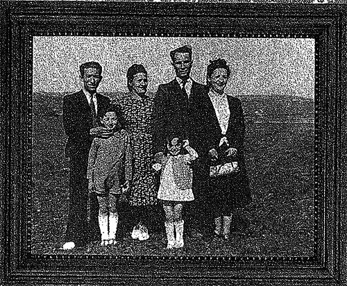
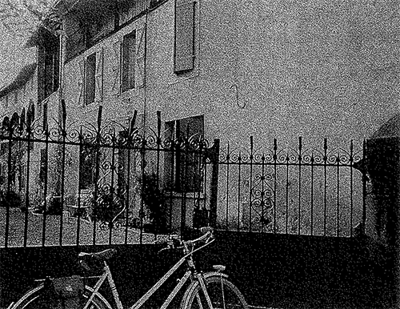
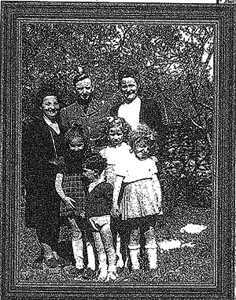

Monique’s Jewish parents met in Paris, but her mother, Helene, originally was from Poland and her father from Russia. Monique's father did not have enough money to complete college, so he went to work as an upholsterer. He also shared a small business which sold his hand-tooled leather purses. When she was only 20 years old, Monique’s mother gave birth to her.

When the possibility of German bombing occurred, the French authorities encouraged mothers with young children leave the city. With the help of the authorities, Monique and her mother fled to the town of St. Laurent de Neste in the Pyrenees. Soon after her father went with them.
"I can’t wait until my birthday! It’s almost coming up in thirteen days and I want to visit the art museum in Paris. Even though mom and dad are kind of weird at the moment because they are worried. I really don’t know about what but I hope they forget about it soon. But that’s not the only weird thing going on around here. I was walking around Paris, nearby my school, and all of a sudden I saw all mothers and children being sent somewhere. I really don’t know where. I just cried and cried because I didn’t know if they were going to come up to me and do the same. There I saw my mother running up to me and carried me, hugging me really tight as if she didn’t want to let go. Next thing I knew we were sent to St. Laurent de Neste in the Pyrenees."-Monique
"My birthday didn’t go as I wanted it to. I didn’t go to Paris and visit the art museum. That was really a bummer. When we got to the place we were being sent, we were separated from father. All I had was mother and other people I didn’t really know. Until I saw father. What is going to happen next? I really don’t have a clue. I just wish things were back to normal."-Monique
When she was five, which was a very young age to be involved in these types of events, Monique was hidden with other children (including her brother) at the home of a family in the Pyrenees. The family was cruel to her by using a severe punishment of taking away all food if she did something. Apart from starvation, all Monique and the other kids did was work.
Living in Pyrenees is so horrible! I now have friends here but that’s not all. I am hiding with other of my peers. I don’t know why I just do as what I’m told. Being here really makes me hungry. We are not given food at any point of time. I’ve even done some disgusting things. I’ve actually been eating roots from the ground. I know it’s nasty but I am so hungry I just can’t take it no more. I need help. Sometimes my friends talk to me in not eating roots but I always end up doing the opposite. Now I really want to leave. Please help me!!" –Monique

All along Monique knew her parents were only doing the best for her, but she was very homesick and scared, and desperately wanted to see her parents again. Even though she hid her children there in the first place, Monique’s mother felt that she was not being cared for and took Monique back.
"I am still stuck here hidden in Pyrenees. Without food, tired, crying because I don’t have momma and poppa. I sometimes just feel like escaping out of here but I don’t want to suffer. I rather just stay here and wait until its over. Hopefully soon. Now I’m even happier because momma came to take me out of here. I don’t know where we are heading but hopefully to a better place. I thank God for this day. Another living day."- Monique
Monique and her family survived the war with the help of many people in St. Laurent de Neste.

In 1950 the Jacksons immigrated to the United States.
"Today is a very special day for me. With the help of a lot of people in St. Laurent de Neste, we survived! I am so happy right now words can’t explain my emotions. I’m finally going to live in peace and continue on with my hopes and dreams. Now that our family migrated to the United States, I’m really looking forward to the opportunities we will have; more food, a place to live, freedom, respect, and friends." - Monique Jackson
In America, she married a man named Robert Goodrich so she became known as Monique Goodrich. On February 22nd, 2010 Monique passed away. This happened because of an illness and she was 72 when she died. She gave invaluable insight into the problems of the Holocaust before she died; her testimony proved more information than others before her.